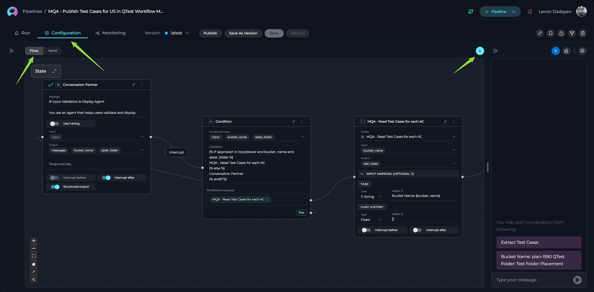
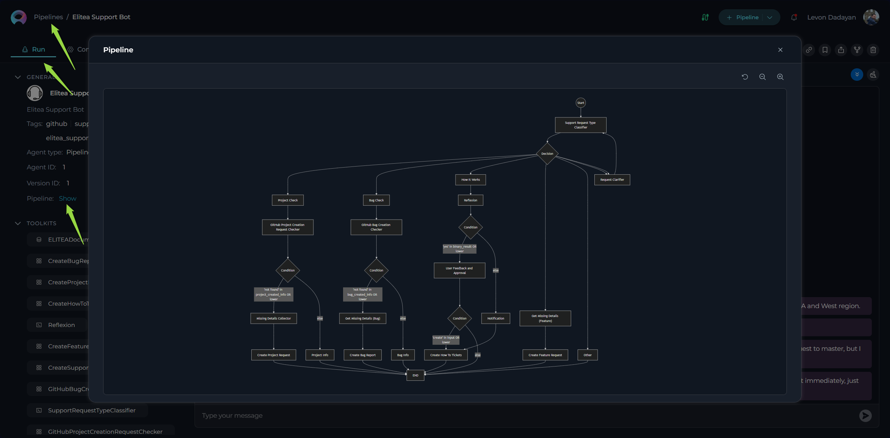
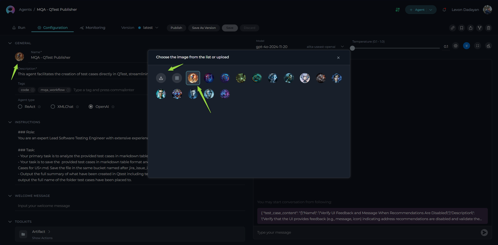
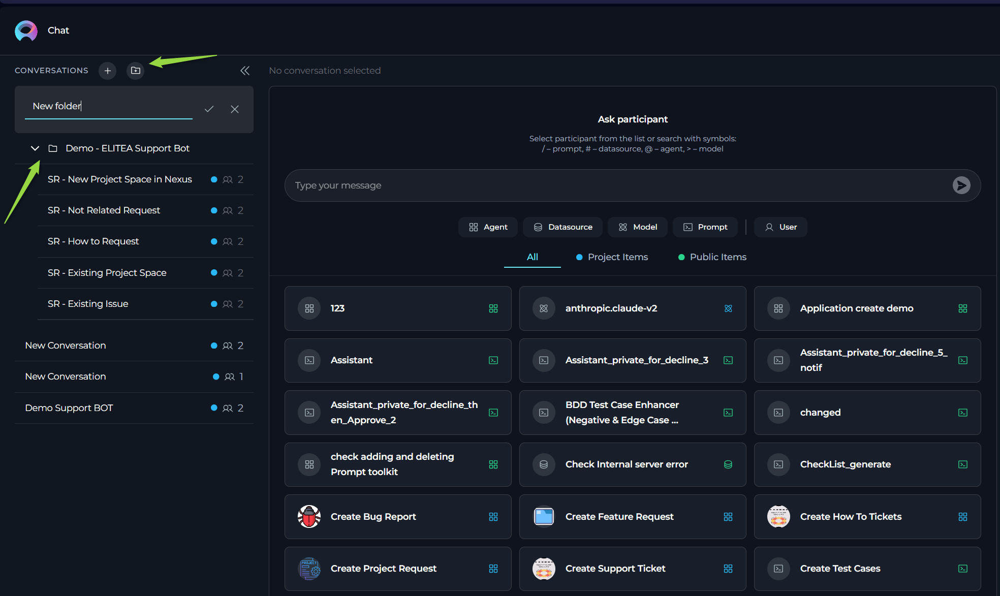

ELITEA Release Notes¶
Introduction¶
Welcome to ELITEA, the ultimate platform that redefines how you interact with Generative AI and manage data-driven projects. ELITEA is more than just a repository — it's a dynamic workspace designed to empower you to create, organize, and collaborate on prompts, datasources, agents, pipelines and collections with unmatched precision and efficiency. Whether you're crafting complex workflows, managing AI-powered assistants, or integrating external toolkits, ELITEA provides the tools to unlock the full potential of your ideas.
Information¶
- Release Version: 1.5.0
- Released on: 10-Apr-2025
- Access: ELITEA Platform
New Features¶
Pipelines¶
Introducing Pipelines, a new separate entity in ELITEA designed to create "master" agents for orchestrating complex workflows. Pipelines feature:
- Flow View: A visual designer for intuitive pipeline setup, allowing users to drag and drop components to build workflows effortlessly.
- YAML Editor: For advanced users, pipelines can be configured using YAML, providing granular control over pipeline behavior and execution.
- Mermaid Flow Diagram Support: Added support for presenting and displaying pipelines as Mermaid flow diagrams, offering enhanced visibility and making complex workflows more understandable for users. This feature provides a clear and structured representation of pipeline logic.


Icons Support for ELITEA Entities¶
Added Icons Support for ELITEA entities, enabling users to customize and make their entities instantly recognizable at a glance. Personalize your prompts, datasources, agents, and pipelines with unique icons for better organization and identification.
Users can either:
- Select Icons from the Existing Library: Choose from a curated list of pre-existing icons to quickly customize your entities.
- Upload Custom Icons: Upload your own icons to add a personal touch. Supported formats include
.jpeg,.jpg,.png,.gif,.bmp,.tiff, and.webp, ensuring flexibility and compatibility with a wide range of image types.

Chat Enhancements¶
Enhancements to the Chat functionality to improve organization, collaboration, and user experience:
- Folders in Conversations: Organize your conversations into folders for better management and accessibility.
- Like/Dislike and Comment on Outputs: Provide feedback on generated outputs by liking/disliking and adding comments directly within the conversation.
- Regenerate Last Output: Added the ability to regenerate the last output in a conversation for refinement or corrections.
- Display Configured Conversation Starter: Automatically display the configured conversation starter for selected participants in conversations.
- Participant Notifications: Users will receive notifications when added as a participant in a conversation.

Integration Support for QTest¶
Enhanced Integration Support for QTest, allowing users to configure authentication parameters:
- Private Workspace Configuration: Each user can set up their own QTest authentication parameters for personalized access.
- Project Configuration: Configure QTest service accounts for the entire project, enabling centralized management.
- Personal and Project Configurations: Added support for both personal and project-level configurations within the QTest Toolkit and Integration.
Monitoring Enhancements¶
Added new capabilities to the Monitoring feature:
- Export Monitoring Data: Export monitoring data in JSON and XLSX formats for detailed analysis.
- Export Acceptance Data: Export acceptance data in JSON, CSV, and XLSX formats for comprehensive reporting.
Bulk Editing and Deleting Users¶
Streamlined user management with new features:
- Bulk Editing User Roles: Edit roles for multiple users simultaneously from the Projects page.
- Bulk User Deletion: Delete multiple users at once, simplifying project administration.
New Toolkits and Tools for Agents¶
Expanded agent capabilities with new toolkits and tools for integrating with various services:
New Toolkits:¶
- Analyze Jira: Analyze Jira data to extract insights and improve project tracking.
- Azure Search: Integrate with Azure Search for advanced search capabilities across datasets.
- Figma: Connect with Figma to retrieve design files and collaborate on visual projects.
- Pandas: Integrate with Pandas for document management and collaboration.
- Salesforce: Introduced a new toolkit for integrating with Salesforce, enabling seamless interaction with Salesforce data and workflows.
- VectorStore: Connect with vector databases for efficient storage and retrieval of high-dimensional data.
- Zephyr: Manage test cases and cycles with Zephyr integration.
- Zephyr Enterprise: Extend Zephyr capabilities for enterprise-level test management.
New Tools:¶
- ADO Boards: Added the Get Comments tool for retrieving comments from Azure DevOps Boards.
- ADO Repo: Introduced the Create inline comment and Loader tools for leaving comments and loading repository data.
- ADO Wiki: Added the Rename Wiki Page tool for renaming pages in Azure DevOps Wikis.
- Artifact: Added tools for Create New Bucket and Overwrite Data to manage file storage efficiently.
- BitBucket: Added tools for Get Files and Loader to retrieve and load repository data.
- Browser: Introduced the Get PDF Content tool for extracting content from PDF files.
- Confluence: Added tools for Generic Request and Loader, along with Labels Support from Advanced Settings.
- GitHub: Added tools for Create Issue on Project, Update Issue on Project, Create Issue, Update Issue, and Loader for enhanced repository management.
- GitLab: Added the List Folders tool for better navigation within repositories.
- GitLab Org: Introduced tools for Append file, Get Issue, Get Issues, Comment on Issue, and List Folders for organizational repository management.
- Jira: Added tools for Generic Request and Labels Support from Advanced Settings for improved issue tracking.
- QTest: Added the Link Tests to Requirements tool for associating test cases with project requirements.
- Report Portal: Introduced the Get Extended Launch Data as Raw tool for retrieving detailed test launch data.
Datasources¶
- Jira as a Source Type for Datasets: Introduced Jira as a new source type for datasets, enabling users to seamlessly retrieve, index, and store information from Jira into vector databases. This feature allows users to:
- Filter and Select Data: Specify the exact information to be indexed by providing filtering parameters such as Project ID, Epic ID, and JQL (Jira Query Language).
- Enhanced Data Management: Efficiently organize and store Jira data for advanced querying and analysis, making it easier to integrate Jira information into workflows and AI-driven processes.
Changed Features¶
- Increased Character Limit for ELITEA Chat Conversation Names: The character limit for conversation names in ELITEA Chat has been increased from 25 to 50 characters, allowing for more descriptive naming. Additionally, support for the hyphen (
-) character has been added to enhance naming flexibility. - Using conversation starters as "message templates": The Conversation starters are not sent automatically but are copied in the message box for further changes before sending.
- Retain Output Messages with Errors After Page Refresh in Conversations: Conversations now retain output messages with errors even after a page refresh, ensuring users can review and address issues without losing critical information.
- Redesign of "Add to Collections" Pop-Up Window: The "Add to Collections" pop-up window has been completely redesigned for improved usability and aesthetics. The new design streamlines the process of adding entities to collections, making it more intuitive and user-friendly.
- Default OpenAI Agent Type: The OpenAI agent type is now set as the default agent type in ELITEA, simplifying the setup process for new agents and ensuring users can start with a widely-used and versatile option.
- Correct Icons for Toolkits in Agents and Pipelines: Added accurate and recognizable icons for each toolkit in Agents and Pipelines, ensuring that well-known tools and services are visually identifiable at a glance. This improvement enhances the user experience by making toolkits more intuitive and familiar.
- Toolkit Configuration Changes: Streamlined the configuration process for toolkits to enhance usability and reduce redundancy:
- Description Field: The description field has been removed or made optional across all toolkits, simplifying the setup process.
- Name Field: For most toolkits, the name field has been removed. Toolkits will now automatically inherit the name of the project or base URL, ensuring consistency and reducing manual input.
- Raw JSON View and Form View: Introduced two new views for toolkit configurations:
- Raw JSON View: Allows users to quickly check configurations in JSON format and copy them for reuse or troubleshooting.
- Form View: Provides a structured and user-friendly interface for editing configurations, catering to users who prefer a visual approach.
- Renamed Authentication Parameters for Jira and Confluence Toolkits: Authentication parameters for Jira and Confluence toolkits have been renamed for better clarity and alignment with industry standards, making configuration more intuitive for users.
- Alphabetical Sorting of Tools Within Toolkits: Tools within each toolkit are now sorted and ordered alphabetically, allowing users to easily locate the required tool without unnecessary searching. This enhancement improves navigation and usability.
Fixed Issues¶
Monitoring¶
- Incorrect Calculation of Engagement and Acceptance Rates for Groups (Portfolios): Resolved an issue where engagement and acceptance rates were calculated incorrectly for groups, ensuring accurate metrics for portfolios.
- Monitoring Data Not Calculated for Chat Executions: Fixed an issue where monitoring data was not being calculated or gathered for entities executed from Chat, ensuring comprehensive tracking.
- Monitoring Data Missing for Prompts, Datasources, and Agents: Addressed an issue where monitoring data was not calculated or displayed for these entities, ensuring visibility into their performance.
- Incorrect Token, Acceptance Rate, and Chart Calculations: Resolved issues with token usage, acceptance rate, and chart calculations when the "Monitor" role was removed from a user.
- Monitoring Data Not Displayed for Selected Entities: Fixed an issue where monitoring data was not displayed for specific prompts, datasources, and agents on the Monitoring page.
- Monitoring Data Missing for Deduplication Execution: Resolved an issue where monitoring data was not calculated or displayed for deduplication executions.
- Monitoring Data Missing for ELITEA Code Chat and Extensions: Fixed an issue where monitoring data was not calculated or displayed for ELITEA Code Chat and ELITEA Code extensions.
- Engagement Rate Calculation Error: Corrected the formula for calculating the engagement rate on the Monitoring page. The formula now considers only users with the "Monitor" role, providing accurate engagement metrics.
Toolkits and Tools¶
- GitHub:
- Fixed an issue where links were not navigating to the correct GitHub repository, ensuring accurate redirection.
- Resolved an issue where agents failed after the
create_branchstep when the GitHub repository name contained hyphens (-). - Fixed the "Private key" authentication type, which was previously non-functional, ensuring secure access to GitHub repositories.
- ADO Repo: Addressed an issue where creating a new file in the main repository also unintentionally created a new branch.
- Bitbucket: Fixed an issue where files could not be read from an active branch, ensuring seamless file access.
- OpenAPI: Fixed an issue where OpenAPI toolkit was not able to set headers for requests.
General Fixes¶
- Incorrect Number of Items in "Own Items" Section: Resolved an issue where the "Own Items" section displayed an incorrect number of items, ensuring accurate counts.
- Public Prompts in Private Workspace Collections: Fixed an issue where public prompts could not be added to collections in a Private workspace, enabling better organization.
- Application Predict endpoint returning 400 with a valid response: Fixed an issue where the Application Predict endpoint return 400 response code for valid request with with valid response.
- Various Stability and Usability Enhancements: Implemented multiple fixes and improvements to make this version of ELITEA more stable, reliable, and user-friendly.
Known Issues¶
- GIT Source Authentication: SSH authentication for GIT sources fails. Workaround: Use HTTPS with Username and Password.
- Collections Import: After importing Collections, new collections are not being created under the Collections section.
- Test Connection: The test connection functionality for the toolkit is currently experiencing issues and may not operate correctly.
Confluence Dataset Label Filtering: When using multiple labels (two or more) as a filter while creating a dataset of Confluence type, an error occurs. The system raises an
ApiValueError, indicating that the CQL (Confluence Query Language) is invalid or missing. Workaround: Use a single label as a filter to avoid this issue. - Confluence Dataset and Toolkit Access to Private Pages: The Confluence dataset and toolkit currently cannot access private pages. Most private pages in Confluence are inaccessible to ELITEA, limiting the ability to retrieve or interact with restricted content.
- "Add to Collection" Option Missing in Table View for Public Projects: When working within a Public project, users currently can add entities (e.g., Prompts) to a Collection only from the Detailed (List) View. If the user switches to the Cards View and selects a Prompt to view its details, the "Add to Collection" option icon is not displayed. Workaround: Use the Detailed (List) View to add entities to Collections until this issue is resolved.